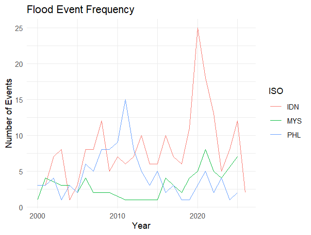
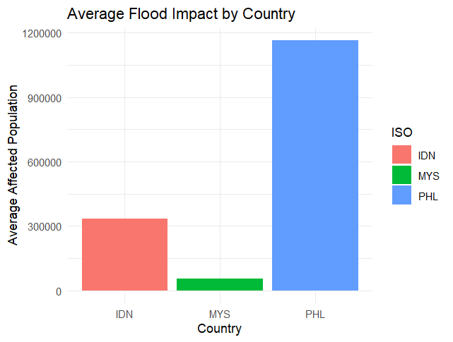
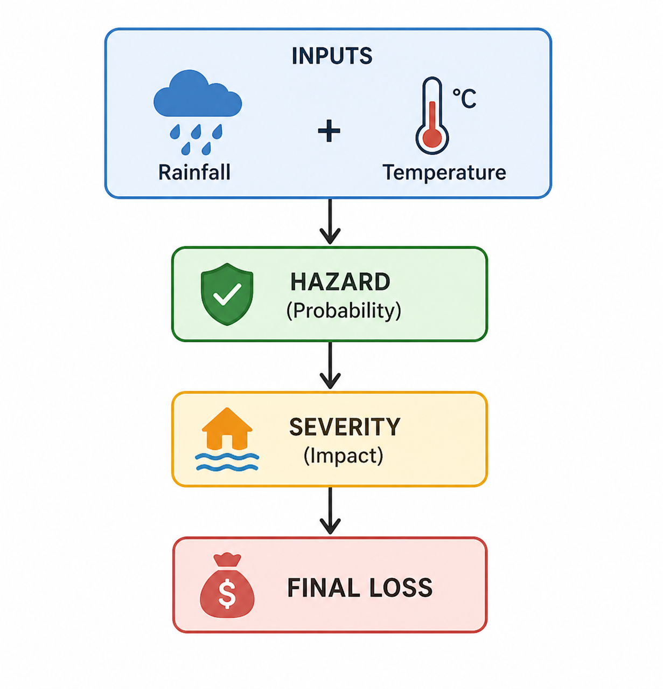
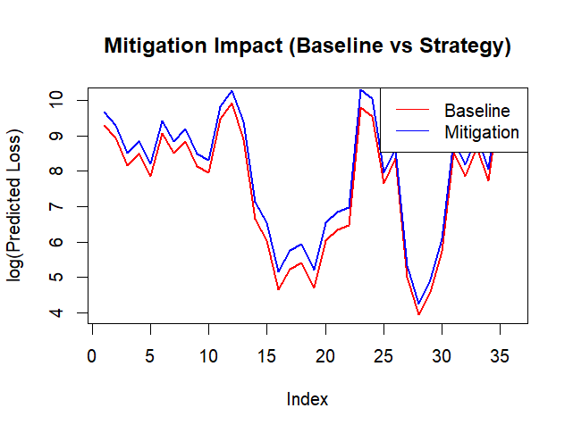
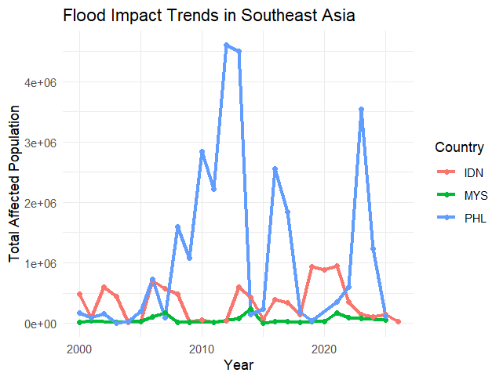
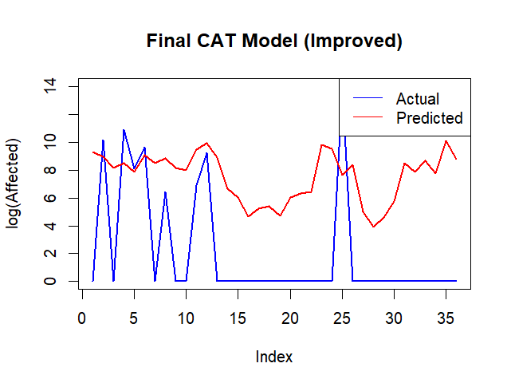

Model Overview & Key Insights
This dashboard presents a catastrophe (CAT) modelling framework used to assess climate-induced flood risk in Southeast Asia. By integrating rainfall, temperature, and socio-economic exposure, the model estimates both the probability and severity of flood events.
The results highlight rainfall intensity as the primary driver of risk and reveal distinct country-level patterns across Malaysia, Indonesia, and the Philippines. The framework also supports stress testing to evaluate how mitigation strategies can reduce expected losses.
Malaysia, Indonesia, Philippines
Hazard + Severity → Loss
Rainfall Intensity, Exposure, Urbanisation
World Bank (WDI), WHO, EM-DAT
Insights at a glance
- Rainfall intensity is the dominant driver of both flood probability and severity across all countries.
- Indonesia exhibits a high-frequency risk profile, indicating frequent moderate flood events.
- The Philippines shows lower frequency but high-severity catastrophic events.
- Malaysia demonstrates increasing exposure driven by rapid urbanisation.
- Mitigation strategies can reduce expected losses by approximately 20–30% under model assumptions.
- Model performance remains robust in capturing overall trends despite extreme event variability.
Country risk overview
Flood hazard vs severity
Country risk comparison
Indonesia shows the highest cumulative exposure, while the Philippines reflects higher severity per event.
Mitigation scenario impact
Mitigation strategies, including improved drainage and infrastructure, can reduce expected flood losses by approximately 20–30%, demonstrating strong potential for risk reduction.
Key figures from the report
These figures summarise the core findings of the catastrophe model, including flood frequency, severity patterns, and model performance across Southeast Asia.
Browse the model framework, validation checks, and risk trends by country.






Sources and methodology
- World Bank (WDI) for socio-economic indicators
- WHO for climate variables
- EM-DAT for historical disaster records
These datasets were integrated to construct a unified climate risk modelling framework.
This dashboard is designed to support decision-making, resilience planning, and prioritisation for flood risk mitigation in Southeast Asia.